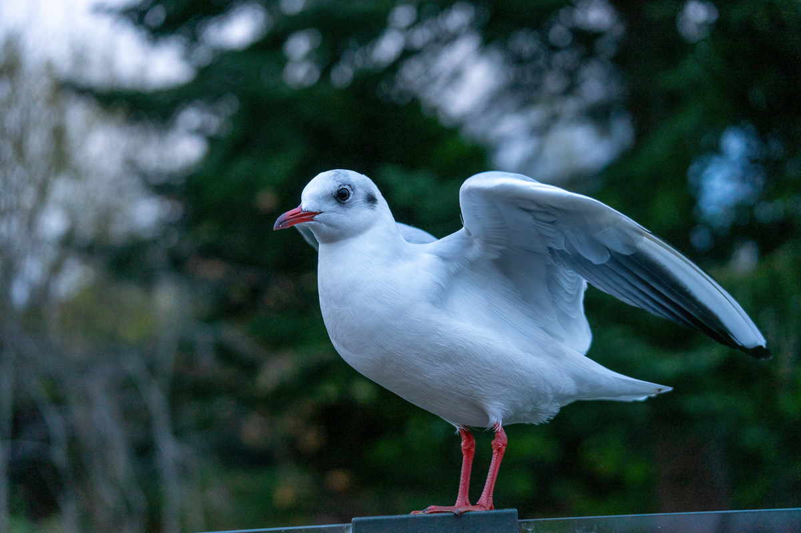
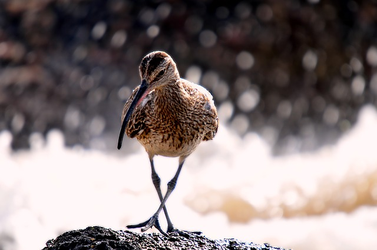
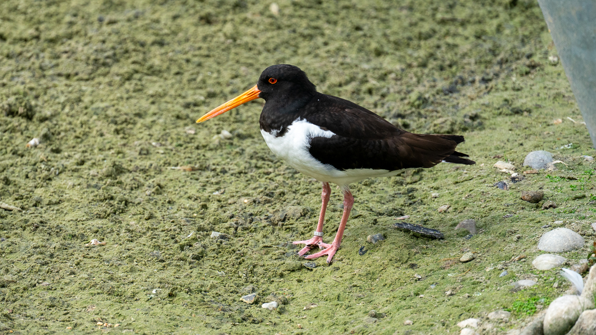
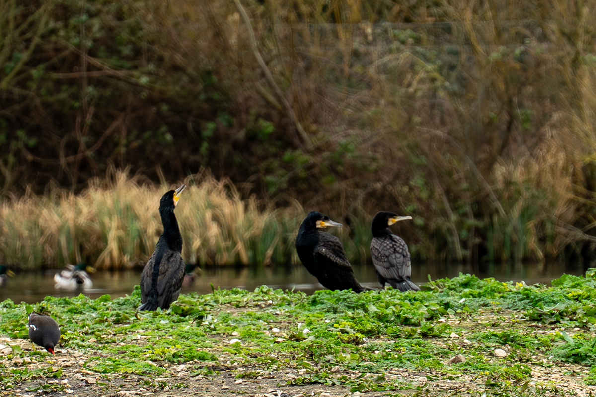
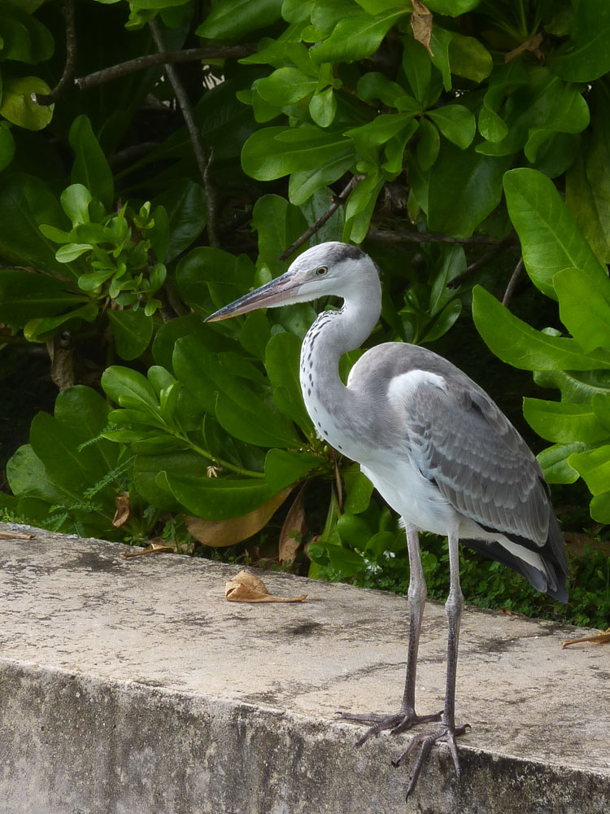
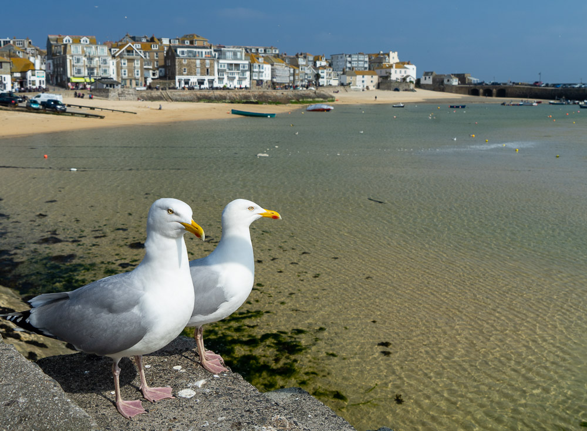
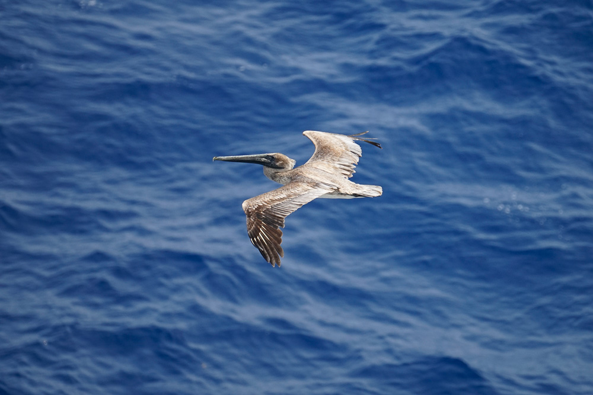
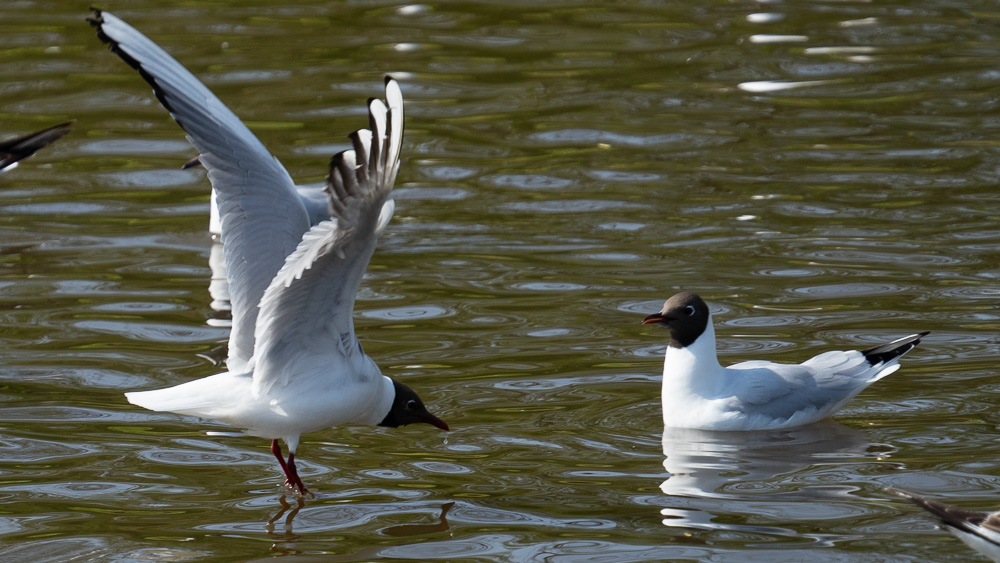
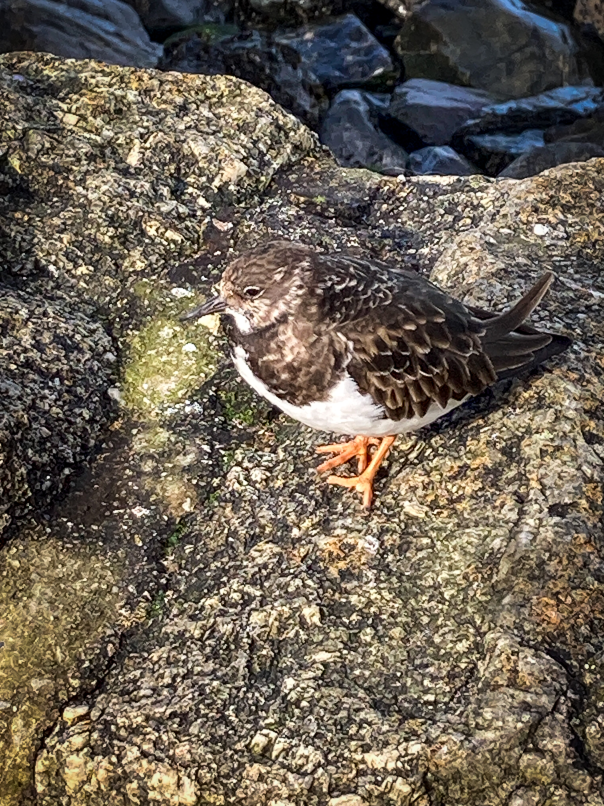

Seabirds
Birds shown

Black-headed Gull
Chroicocephalus ridibundus
Slimbridge
2024

Curlew
Numenius arquata
Slimbridge
2024

Eurasian Oystercatcher
Haematopus ostralegus
Slimbridge
2024
 Gannet
Morus bassanus
Gannet
Morus bassanus
missing
2024

Great Cormorant
Phalacrocorax carbo
Slimbridge
Mar 2026
 Guillemot
Uria aalge
Guillemot
Uria aalge
missing
2024

Egret
Egretta garzetta
Bandos
2024

Gull
Larus argentatus
St Ives
2024
 Kittiwake
Rissa tridactyla
Kittiwake
Rissa tridactyla
missing
2024

Pelican
Pelecanus occidentalis
Florida Keys
2024
 Rock Dove
Columba livia
Rock Dove
Columba livia
St Ives
Mar 2026

Tern
Sterna hirundo
Slimbridge
2024

Turnstone
Arenaria interpres
St Ives
Mar 2026